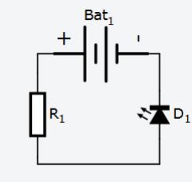

Для того, чтобы выполнять упражнения данного учебного пособия, не обязательно покупать плату (хотя это и предпочтительней, если у вас есть такая возможность). Мы будем использовать веб- приложение Autodesk CIRCUITS, которое позволяет моделировать Arduino и различные электронные компоненты прямо в веб-браузере без необходимости загрузки и установки чего-либо себе на компьютер. Данная система абсолютно бесплатна и все, что вам нужно для работы с ней – выход в Интернет.
Заходим на сайт http://circuits.io и нажимаем в верхнем правом углу кнопку «Sign up for free». Можно зарегистрироваться непосредственно в системе или использовать возможность входа с помощью уже имеющихся учетных записей от Google, Facebook и других сервисов. Чтобы создать новую схему, нажимаем кнопку «New Electronics Lab». Вы попадете в редактор электронных моделей, в котором пока есть одна пустая макетная плата. Эта плата состоит из четырех областей (см. Рис. 12). Сверху и снизу идут по два ряда отверстий, предназначенных для создания шин питания. Все отверстия одного ряда связаны друг с другом. Предполагается, что через одно из отверстий к этим шинам подводят напряжение питания (положительный или отрицательный контакт), а затем, через другие отверстия к питанию можно будет подключать компоненты нашей системы.
Рис. 12: Пример платы
Отверстия в каждой из двух центральных областей, напротив, связаны вертикально: они соединены в рядах A-B-C-D-E и F-G-H-I-J. Эти области используются для установки и подключения электронных устройств. Чтобы создать схему, нужно в первую очередь добавить компоненты. Для этого нажимаем кнопку «+ Components» в верхнем правом углу экрана (Рис. 13).
Рис. 13: Кнопка «+ Components»
Снизу появится панель, в которой можно выбирать различные компоненты, поддерживаемые эмулятором. Давайте выберем светодиод и батарею и разместим их на нашей макетной плате. Если выводы (контакты) компонентов совпадут с отверстиями платы, то эмулятор будет считать, что они туда вставлены и есть контакт.
Если выделить мышью компонент, то справа сверху появится окно с его свойствами. С его помощью можно, например, задать цвет светодиода или поменять сопротивление резистора (Рис. 14).
Рис. 14: Пример окна со свойствами
Расположенные в левом верхнем углу кнопки позволяют управлять редактором модели. Чтобы соединить компоненты проводами, достаточно щелкнуть мышью на контактах, которые надо соединить. Появится изображение провода. Если щелкнуть по выделенному проводу, то на нем появится точка, с помощью которой провод можно изогнуть.
Давайте подключим светодиод проводами к шине питания. Чтобы посмотреть, как работает схема, нажмите на кнопку « Start Simulation» в правом верхнем углу экрана (Рис. 15).
Рис. 15: Пример подключения светодиода
Что произошло? Симулятор показывает, что наш светодиод перегорел. Светодиоды нельзя напрямую подключать к источнику питания, особенно напряжением 9 вольт. На этом примере хорошо видно одно из полезных свойств использования моделей – сжечь виртуальный светодиод можно совершенно бесплатно, и вам не потребуется бежать в магазин за новым. Моделирование позволяет проверить правильность схемы до того, как мы потратим силы и время на ее изготовление. Можно проверить, заработает что-то или нет, поэкспериментировать с разными компонентами и способами соединения, и уже после того, как мы убедимся, что все работает как надо, можно купить компоненты и собрать реальную схему.
К сожалению, модели работают недостаточно хорошо, или, может быть лучше сказать, что они работают слишком хорошо, и показывают, как наше устройство работало бы в идеальном мире. В реальном мире всегда есть какие-то шумы, помехи, незначительные отклонения от идеального поведения, которые в некоторых случаях могут повлиять на работу устройства, которое до этого безупречно работало в эмуляторе.
Давайте исправим нашу схему, чтобы светодиод не перегорал. Для этого надо добавить в нее резистор на 430 Ом, последовательно соединенный со светодиодом. Для изменения проводов, нужно сначала выделить провод, а затем перетащить одну из его ключевых точек. Удалить промежуточную точку можно выделив ее и нажав "Delete" на клавиатуре. Запустим схему. Теперь она работает нормально, светодиод загорелся (Рис. 16).
Рис. 16: Работа светодиода
В верхнем правом углу экрана есть кнопки, которые позволяют переключаться между разными режимами редактирования модели.
Давайте заглянем на страницу с принципиальной схемой. На ней мы видим схему, соответствующую соединениям, которые мы сделали на макетной плате (Рис. 17). Компоненты можно вращать и перемещать мышью. Если их аккуратно разложить, то получится вполне читаемая схема.

Рис. 17: Пример схемы
Редактировать схему (добавлять и удалять компоненты и связи между ними) в этом режиме нельзя. К сожалению, нельзя и перераспределить руками соединения, они всегда прокладываются автоматически, поэтому сложные схемы могут получаться достаточно неряшливыми.
Код для плат Arduino можно писать прямо в веб-интерфейсе среды Autodesk CIRCUITS. Для этого нужно нажать кнопку «Code Editor». Эта функция будет доступна только после добавления платы Arduino или других программируемых компонентов в модель. Написав программу ее можно запустить, нажав кнопку «Upload & Run» в верхней части редактора кода. Там же имеются и другие кнопки: